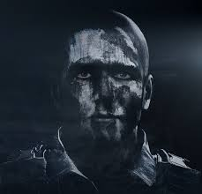
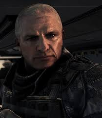
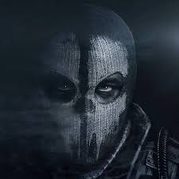
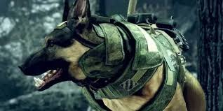
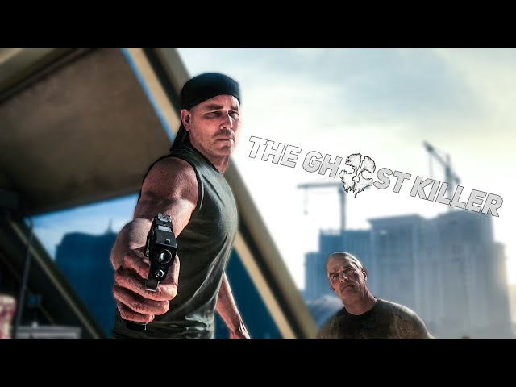
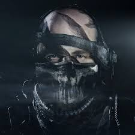

інформація
Call of Duty: Ghosts — це шутер від першої особи, у якому гравець бере участь у масштабних військових конфліктах майбутнього. Події гри відбуваються у світі, де після великої війни баланс сил змінився, а нові технології та сучасна зброя стали важливою частиною бойових операцій
Ігровий процес складається з виконання різних місій: штурмів, прихованих операцій, оборони позицій та використання військової техніки. Гравець переміщується по різних локаціях — від зруйнованих міст до дикої природи і навіть космосу. У деяких завданнях використовуються незвичайні елементи, наприклад керування технікою або дії в умовах невагомості
У грі також є багатокористувацький режим, де гравці змагаються один з одним на різних картах, використовують різні види зброї та налаштовують своє спорядження. Крім того, присутній окремий режим виживання, у якому потрібно відбиватися від хвиль ворогів і виконувати завдання, щоб протриматися якомога довше.
Call of Duty: Ghosts вирізняється динамічним ігровим процесом, різноманітними місіями та великою кількістю зброї й техніки, що робить гру цікавою для любителів військових шутерів.
персонажі
- Хеш

- Еліас

- Логан

- Райлі

- Рорк

- Меррік

інформація про персонажів
Логан — головний герой гри та боєць елітного підрозділу «Привиди». Молодий солдат, який разом із братом бере участь у небезпечних військових операціях проти Федерації. Майже не розмовляє, щоб гравець міг відчути себе на його місці та сприймати події від першої особи.
Хeш — старший брат Логана та досвідчений боєць загону «Привиди». Він підтримує команду під час місій, допомагає у боях і завжди прикриває напарників, демонструючи відданість і хоробрість.
Еліас — командир підрозділу «Привиди» та батько Логана й Хєша. Суворий і досвідчений військовий лідер, який керує операціями та навчає бійців виживати у найскладніших умовах.
Рорк — головний ворог у грі, колишній боєць «Привидів». Після полону переходить на бік Федерації та починає переслідувати свій колишній загін, добре знаючи їхню тактику.
Меррік — один із ключових бійців підрозділу «Привиди» та досвідчений командир. Він допомагає керувати операціями, підтримує команду під час складних місій і є надійним союзником для Логана та його загону.
Райлі — військовий пес, який допомагає солдатам під час боїв і розвідки. Він знаходить ворогів, атакує їх і є важливою частиною команди.